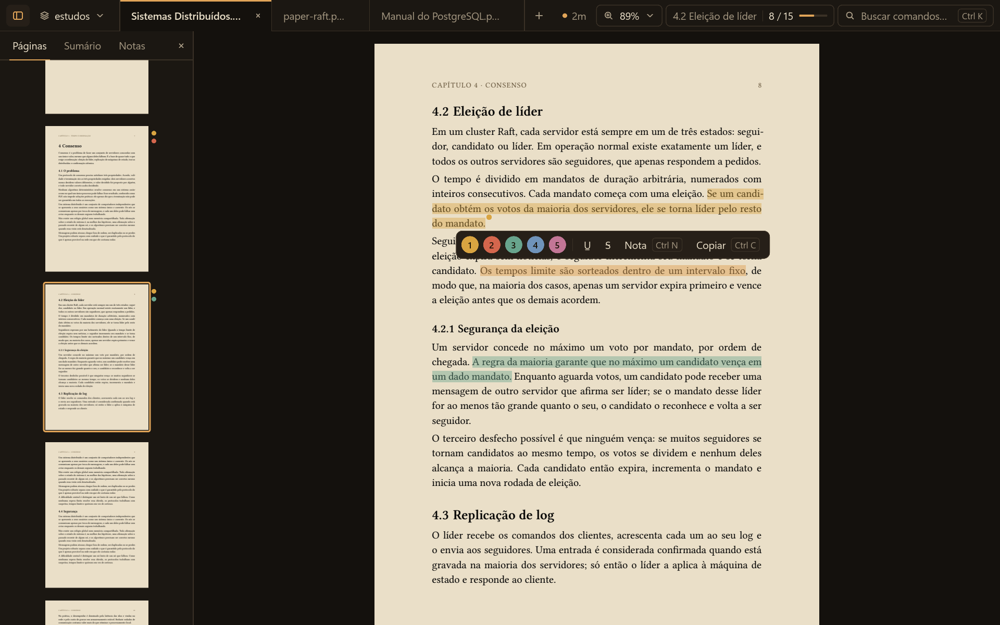
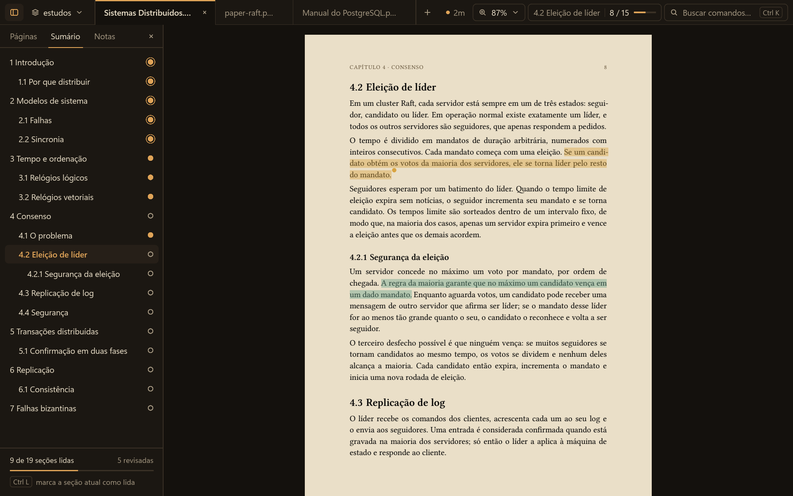
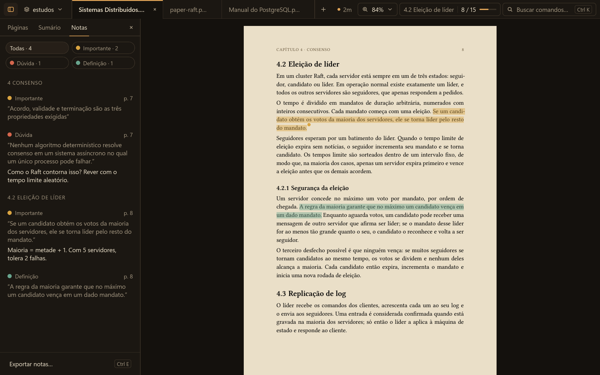
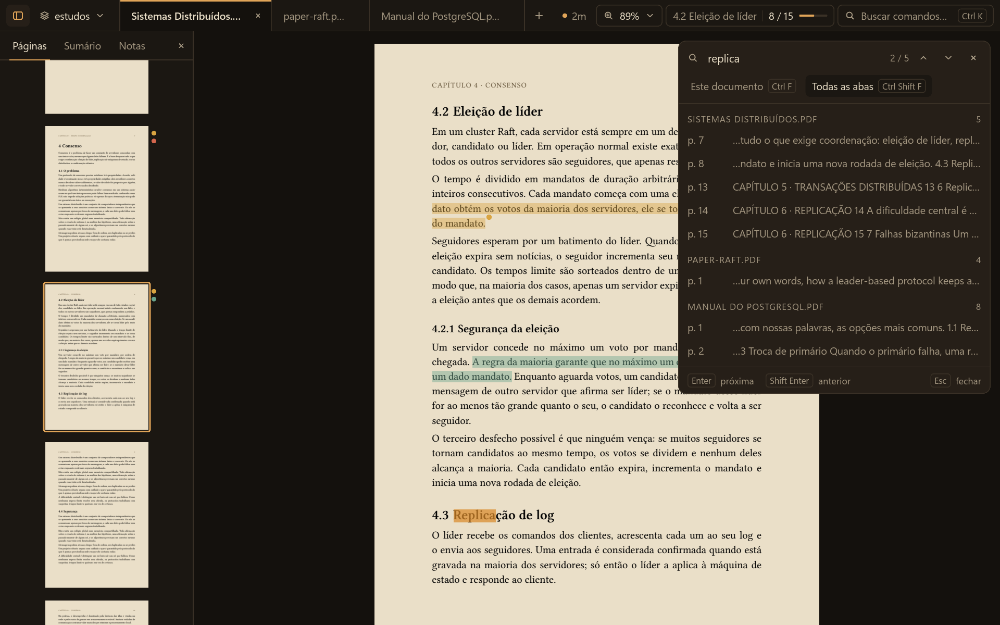
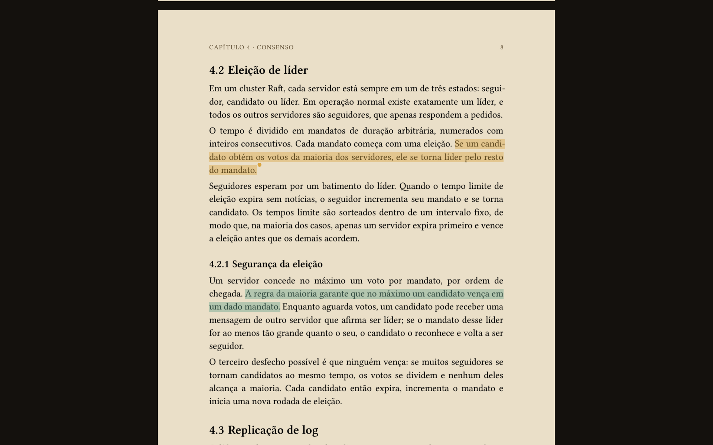
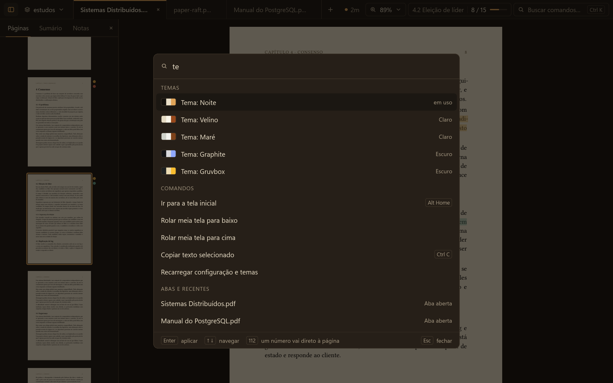
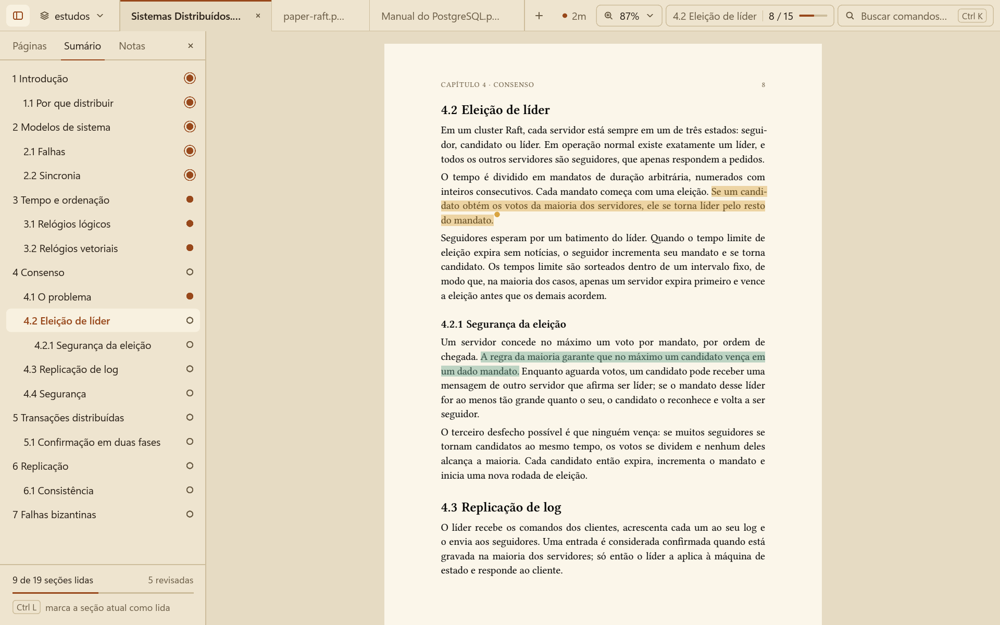
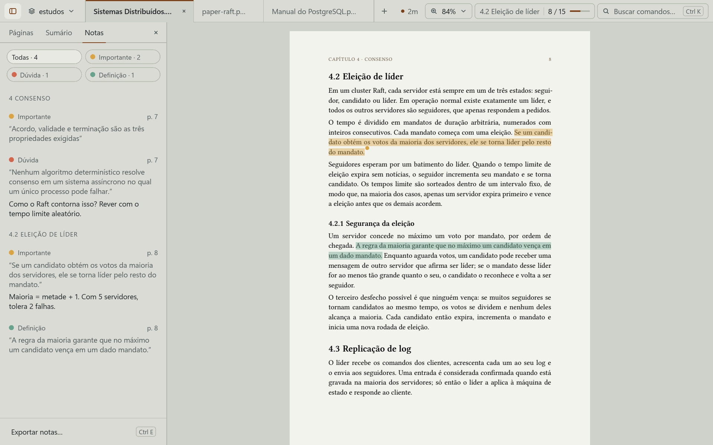

Estude a página,
não o programa.
Leme é um leitor de PDF para Windows feito para quem passa horas no mesmo material: concursos, faculdade, certificações. Rápido, silencioso e todo seu. Nada sai do seu computador.
Baixar para Windows Ler a documentaçãoGrátis e de código aberto. Interface em português (ou inglês).

Grife com intenção
Cada cor tem um significado: importante, dúvida, definição, exemplo, revisar. Renomeie como quiser. Selecione o texto e aperte 1 a 5; as miniaturas mostram onde ficaram as dúvidas do capítulo.
Saiba onde parou
Marque cada seção do sumário como lida ou revisada (um clique ou Ctrl L). O cabeçalho mostra a seção e a página em que você está, e a tela inicial reabre o último documento com um Enter.

Notas que voltam ao texto
Escreva uma nota sobre qualquer grifo (Ctrl N). O painel de notas reúne tudo por seção, filtra por cor e leva de volta à página com um clique.

Do PDF para o Anki
Ctrl E exporta seus grifos como um resumo em Markdown por seção e cor, um arquivo que o Anki importa como cartões (sua nota na frente, o trecho no verso) ou CSV. Escolha só as cores que importam, como as dúvidas na véspera da prova.
Ache em todo o material
Ctrl Shift F busca em todas as abas de uma vez e lista as
páginas por documento, sem se importar com acentos:
replica acha réplica e replicação. Na
lei seca, Ctrl P e art. 37 levam direto ao
artigo.

Só você e o texto
O modo foco (Ctrl .) esconde abas, painel lateral e cabeçalho. O cronômetro conta o tempo em que você realmente lê, sem notificações, e pode ser desligado.

Todo comando, uma tecla
A paleta (Ctrl K) alcança cada ação, aba, sessão, arquivo recente e tema. Tudo tem atalho, e dá para usar as teclas do vim.

Três luzes para ler
No modo Papel, o branco do PDF ganha a cor do tema: a página é a única
coisa acesa e não ofusca à noite. Há mais dez temas embutidos, e os seus
são arquivos .toml.


E também
Uma sessão por matéria
Agrupe as abas em sessões nomeadas, como no tmux: uma para Constitucional, outra para Português. O Leme reabre a última, cada aba na página em que você parou.
Notas no Obsidian
Exporte em Markdown com propriedades, citações que linkam de volta à página e ids estáveis para referenciar.
Privado
Sem telemetria, sem conta, sem nuvem. Suas notas ficam no seu computador; o PDF nunca é alterado.
Leve de verdade
Rust, Slint e PDFium, sem navegador embutido. Abre uma apostila de mil páginas na hora.
A página é a única coisa acesa. O resto é a mesa no escuro.Rápido, leve, calmo